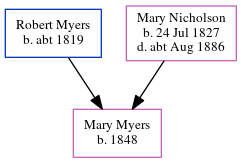

Mary Myers 1848 -
[ Home ] | [ Calendar ] | [ Surnames Index ] | [ Census Index ] | [ Family History ]The child of Robert Myers (an engine man) and Mary Nicholson, Mary Myers was born in North Shields, Northumberland, England in 18481. On Mar 30, 1851, she was living at Quay, Blyth, Tyne and Wear, England1.
Parents
- Robert was born c. 1819
- Mary Ann was born on Jul 24, 1827
Citations
- 1851 England, Wales & Scotland Census - Findmypast (was age 3 and the daughter of the head of the household)
Family Tree
Generated by ged2site. Last updated on Jun 11, 2024